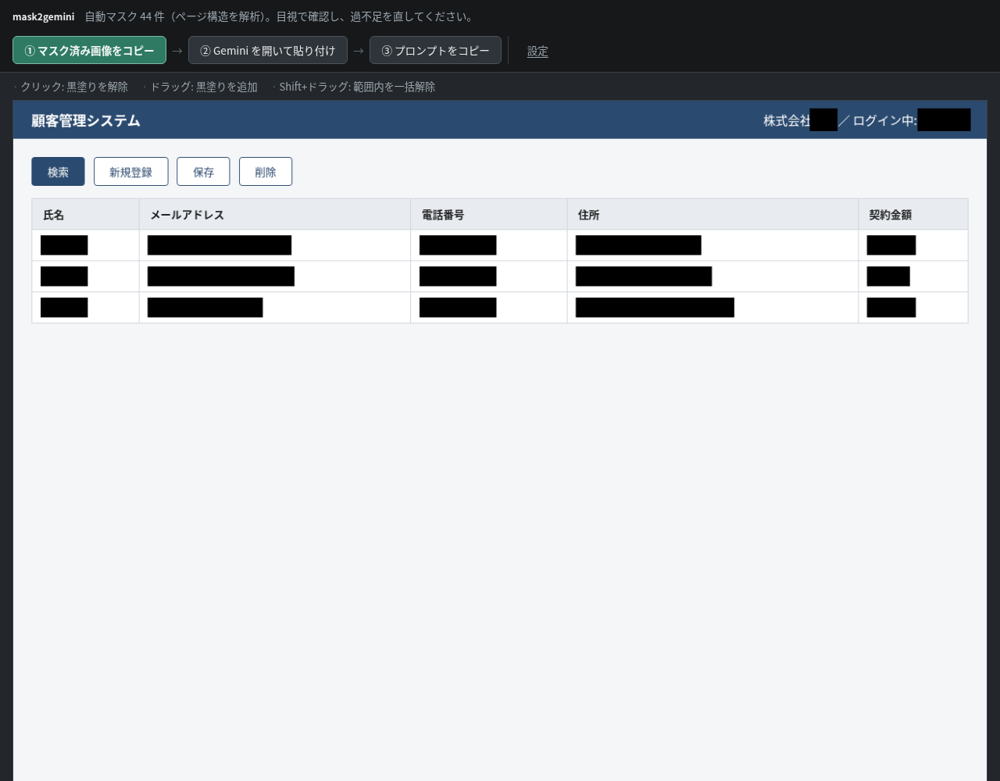
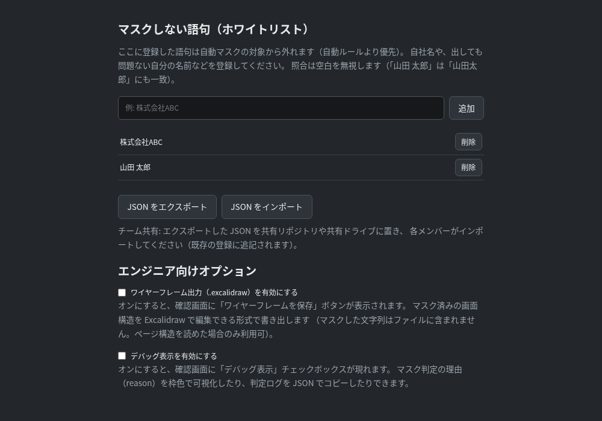

mask2gemini 利用ガイド
mask2gemini は、いま見ている画面を撮影して、氏名・メールアドレス・電話番号などのデータ部分を自動で黒塗りにし、Gemini に「この画面の改善モックを作って」と依頼する準備をしてくれる Chrome 拡張機能です。
- 黒塗りの判定はすべてお使いのパソコンの中だけで行われ、元の画面やテキストが外部に送信されることはありません
- Gemini に渡るのは、あなたが目で確認して確定した黒塗り済みの画像だけです
インストール（初回のみ）
- 受け取った zip ファイルを右クリック →「すべて展開」等で展開する（展開先はどこでも構いませんが、展開したフォルダは削除せずそのまま残してください）
- Chrome のアドレスバーに
chrome://extensions と入力して開く
- 右上の「デベロッパー モード」をオンにする
- 「パッケージ化されていない拡張機能を読み込む」を押し、展開したフォルダの中の
extension フォルダを選ぶ
- ツールバーのパズルピースのアイコンから mask2gemini をピン留めしておくと使いやすくなります
使い方
- マスクしたい画面（社内システムなど）のタブを開いた状態で、ツールバーの mask2gemini のアイコンをクリック
- 確認画面が新しいタブで開き、データらしい部分に自動で黒塗りが載ります

- 黒塗りを目で確認して手直しする（下の表を参照）。この確認がいちばん大事なステップです
- 上部のボタンを 番号の順に 押します:
「① マスク済み画像をコピー」→「② Gemini を開いて貼り付け」（開いた Gemini の入力欄に Ctrl+V で画像を貼る）→ 確認画面のタブに戻って「③ プロンプトをコピー」→ Gemini に貼り付けて、要望の部分を書き換えて送信
黒塗りの手直し
| やりたいこと | 操作 |
|---|
| 黒塗りを外す（塗りすぎ） | 黒塗りをクリック |
| 黒塗りを足す（塗り漏れ） | 塗りたい範囲をドラッグ |
| 範囲内の黒塗りをまとめて外す | Shift を押しながらドラッグ |
自動の黒塗りは完璧ではありません。個人情報が残っていないか、必ず目で確認してから ① を押してください。迷ったら塗る方が安全です（塗りすぎても Gemini のモック作成にはほぼ影響しません）。
いつも黒塗りされてしまう語句があるとき（ホワイトリスト）
自社名やサービス名など「隠す必要がないのに毎回塗られる語句」は、設定画面に登録すると次回から塗られなくなります。設定画面は、確認画面右上の「設定」から開けます。

- 確認画面で黒塗りをクリックして外したときに出る「次回からマスクしない」ボタンからも、その場で登録できます
- 空白は無視して照合されます（「山田 太郎」を登録すると「山田太郎」も塗られなくなります）
チームでの共有: 設定画面の「JSON をエクスポート」で書き出したファイルをチームの共有場所に置き、各メンバーが「JSON をインポート」で取り込むと、登録語句をそろえられます（既存の登録に追記されます）。
更新のしかた
- 新しい zip を受け取ったら展開し、いま使っているフォルダと置き換える（同じ場所に上書き展開でも OK）
chrome://extensions を開き、mask2gemini の「再読み込み」（丸い矢印）を押す
別の場所に展開した場合は、いったん「削除」してから「パッケージ化されていない拡張機能を読み込む」で新しいフォルダを選び直してください。登録したホワイトリストは Chrome 側に保存されているので消えません。
知っておいてほしいこと
- 撮影されるのは画面に見えている範囲だけです。スクロールしないと見えない部分も渡したいときは、スクロールしてもう一度アイコンを押し、複数枚に分けてください
- Chrome の設定画面（
chrome://〜）やウェブストアなど、撮影できないページもあります。その場合は画面にその旨が表示されます
- PDF など一部のページでは文字の読み取り方式が変わり（画像からの文字認識）、精度が少し落ちます。黒塗りの確認をより丁寧に行ってください